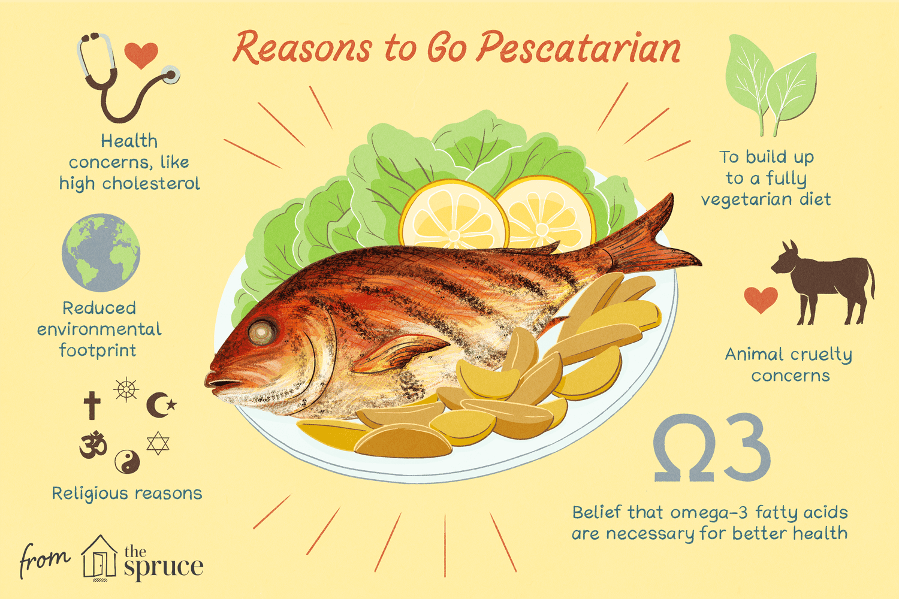

Pescetarianism, sometimes spelled pescatarianism is a dietary practice in which seafood is the only source of meat in an otherwise vegetarian diet. The inclusion of other animal products, such as eggs and dairy, is optional. According to research conducted from 2017 to 2018, approximately 3% of adults worldwide are pescetarian.
I've been on this diet for 6+ years and it has really been a long year of discipline. However, I'm ready to eat meat, which I'm happy is breed by someone I know and has no anti biotics.